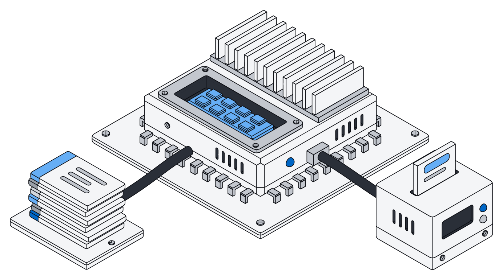
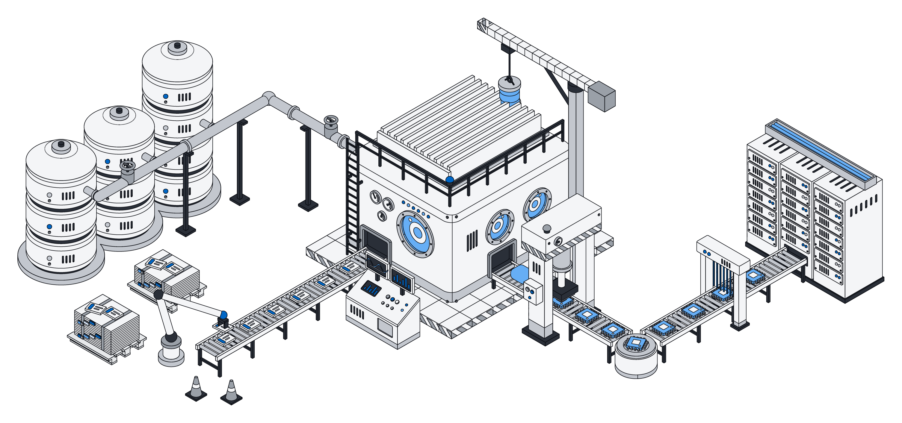
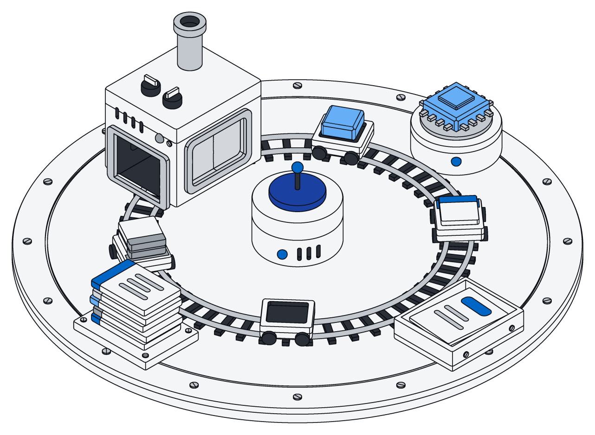
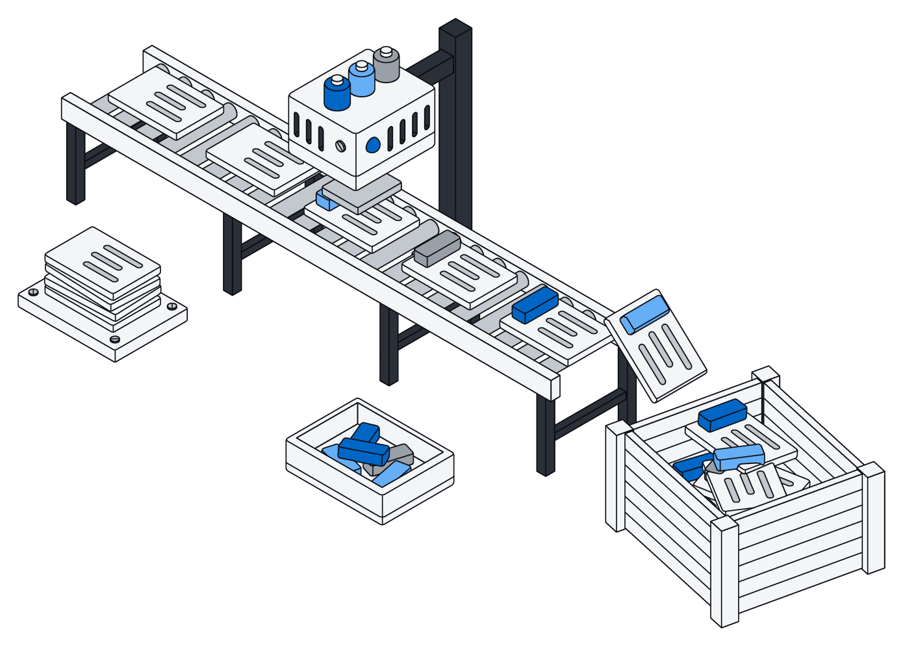
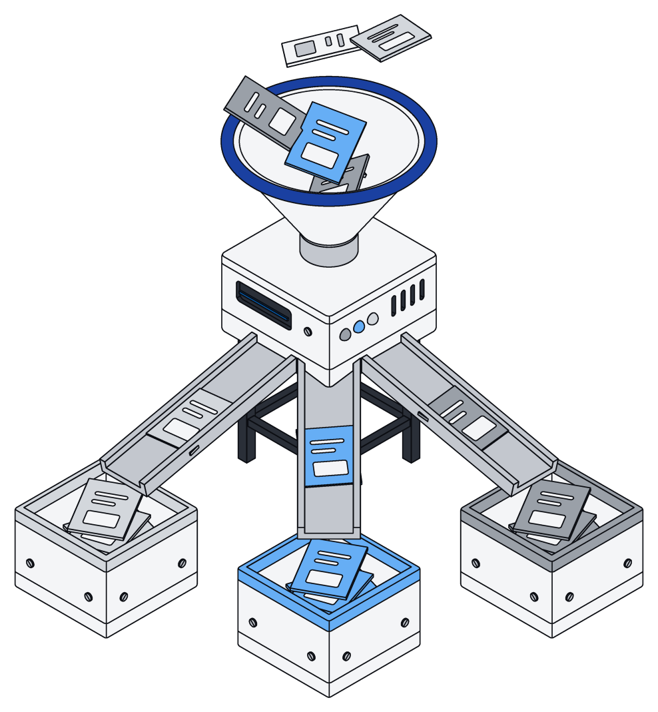
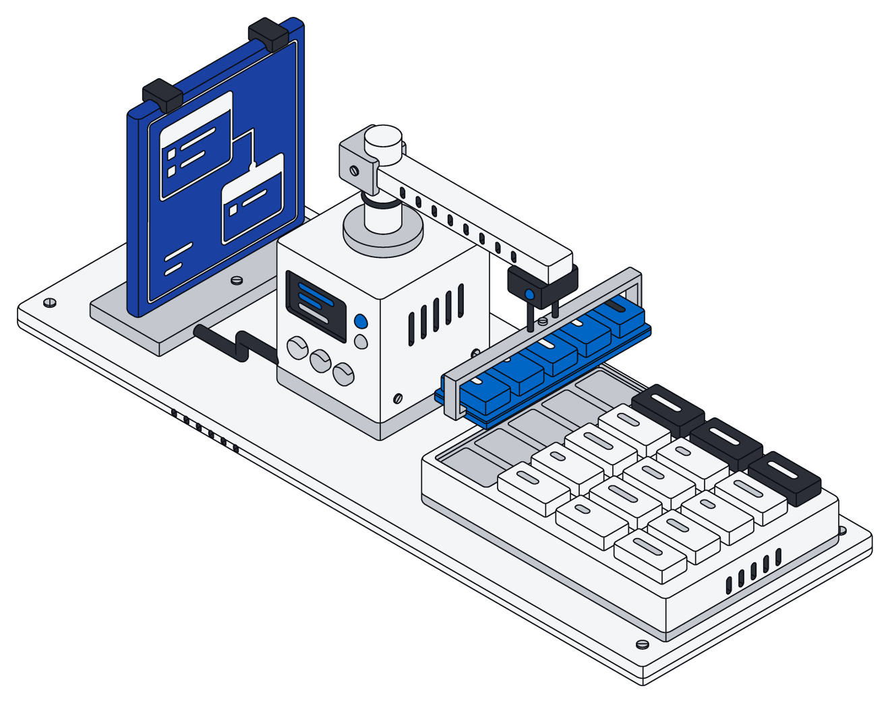
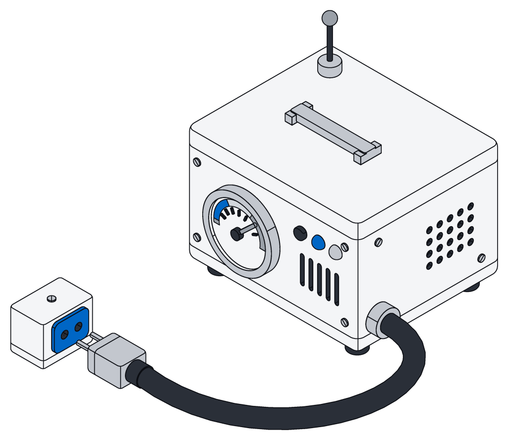

AI that knows your business.
Every document you file shows how your business works. Turn that into a model of your own, and let your assistants call on it anytime.

From your work to a model, in five steps.
Your records already hold the answers. Archive turns them into a model your assistants can use.

File, train, use.
- A
File
Filing is teaching. Where something lands says what it is, and what you write down says what it means.
- B
Collect
Gather your examples in one step: what came in, and what it became.
- C
Train
Train a sorter that knows what something is, or a filer that fills in the details, on your examples alone.
- D
Test
Check it on examples it has never seen, from your own records, before it goes to work.
- E
Use
Your assistants call on it whenever they need it, at full strength.

Your work is the training.
Each time a person or an assistant files something, that is an example the model can learn from.
There is no separate labeling job to keep up with.

A sorter that knows what is what.
It reads something new and knows where it belongs: invoice, contract, resume, or anything else you keep.
It learns your categories, not generic ones, so it sorts the way your team already does.

A filer that fills in the details.
It reads a long document and fills in your records field by field, just as your assistants would.
A long contract, a full mail thread or a whole report goes in at once.

Ready when your assistants are.
Your assistants send it something new, get the answer back and file it, all as you.
It always runs at full strength, never cut down to save cost.

Your examples, in one step.
Gather training examples the same way your assistants do everything else, from only what you are allowed to see.
Archive takes it from there, and your assistants file whatever the model returns.
return archive.sql(` SELECT left(f.text, 2000) AS text, t.label FROM (SELECT source, 'invoice' AS label FROM invoice UNION ALL SELECT source, 'contract' FROM contract UNION ALL SELECT source, 'receipt' FROM receipt) t JOIN archive.file f ON f.id = t.source WHERE f.status = 'done' ORDER BY f.created_at DESC LIMIT 100`)
const rows = await archive.list("invoice", { limit: 10 }) const examples = [] for (const { id, space, created_at, updated_at, source, ...fields } of rows) { if (!source) continue const file = await archive.file(source) examples.push({ input: file.text, output: fields }) } return examples
return archive.sql(` SELECT 'invoice' AS label, count(*) FROM invoice WHERE source IS NOT NULL UNION ALL SELECT 'contract', count(*) FROM contract WHERE source IS NOT NULL UNION ALL SELECT 'receipt', count(*) FROM receipt WHERE source IS NOT NULL`)
Two kinds of model.
Both learn from your own records, and both are ready for your assistants to use.
| Sorter | Filer | |
|---|---|---|
| Does | Knows what something is | Turns a document into filled-in records |
| Reads | A file, a message or any text | Long documents, in one go |
| Gives back | Where it belongs | Records with every field filled in, ready to save |
| Learns from | What came in and where it was filed | What came in and what it became |
| Tested on | Your own examples it never saw | Your own examples it never saw |
| Quality | Full strength, never cut down | Full strength, never cut down |
| Used by | Your assistants, whenever they need it | Your assistants, whenever they need it |
Questions
What data does a model learn from?
Only examples from your own records, and only ones you are allowed to see.
Do I have to label anything by hand?
No. Filing something is the lesson, so your examples grow as people and assistants use Archive.
How much can the filer read at once?
A long contract, a full mail thread or a whole report, in one go, without splitting it up first.
Why full strength?
Cut-down models are cheaper to run but slip on the tricky cases, which is exactly where filing goes wrong. Every model runs at full strength.
How do my assistants use a model?
They send it something new and get back what it is or what it says. Then they file the result as you, all or nothing.
What if I change how my records are organized?
A filer fills in the fields it learned. After you add or change fields, gather fresh examples and train again.
Train a model on your own work.
Start filing today, and your first examples start adding up.